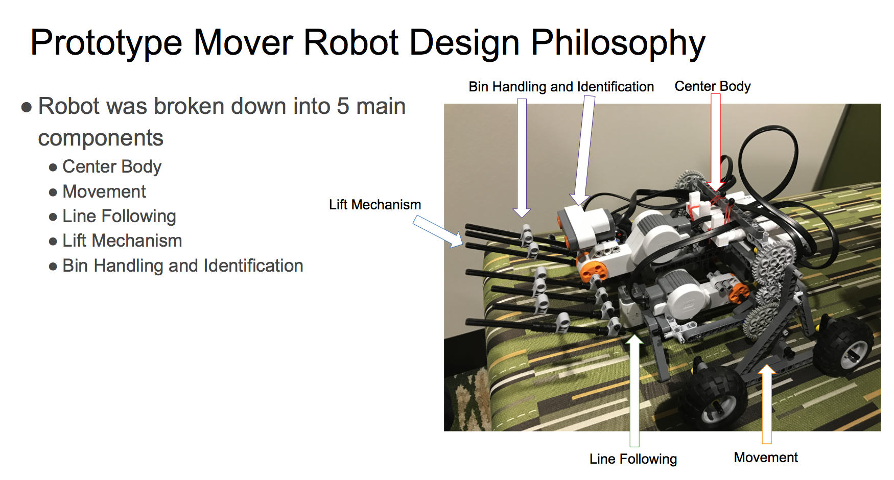
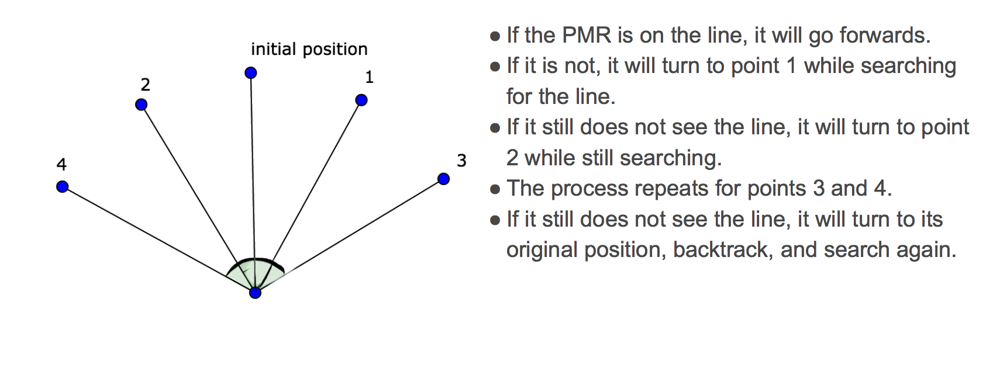
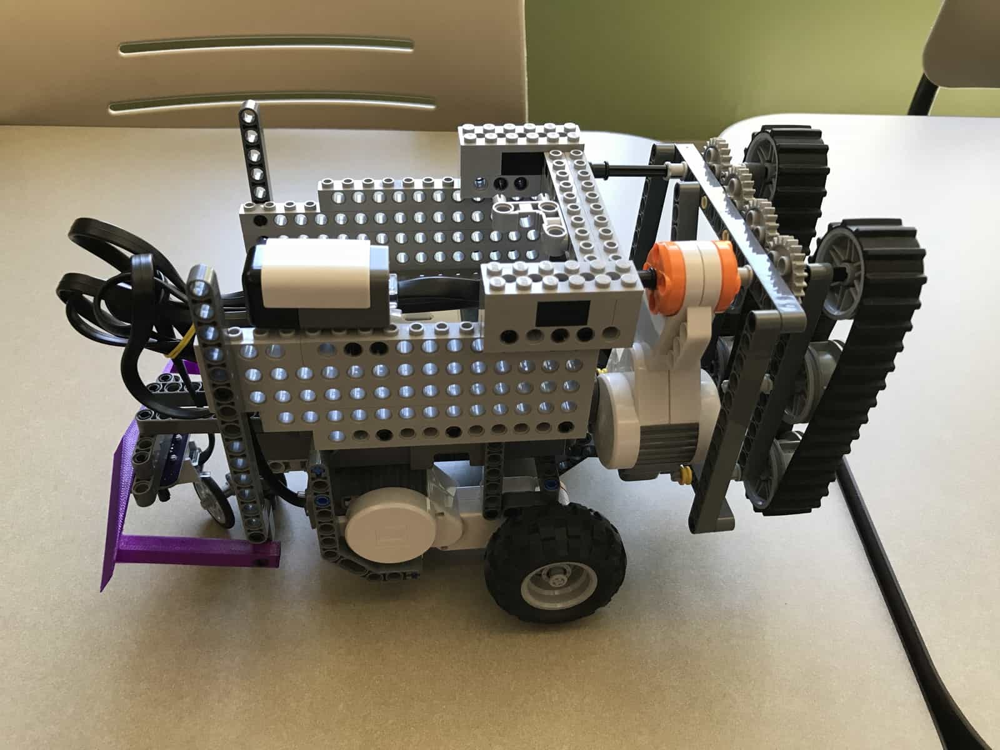
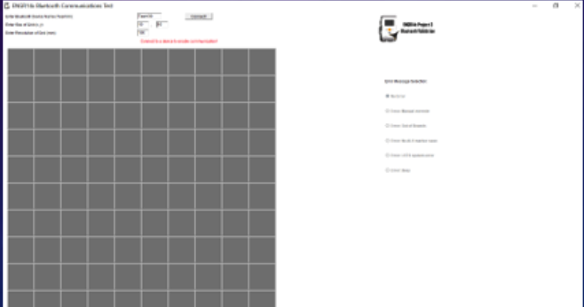

For the final semester project of ENGR 141: Honors Creativity in Engineering Design I, my team was
tasked with the design of a working prototype of a robot that was to be deployed in areas hit by
natural disasters like earthquakes. Natural disasters create waste and debris of many different types.
The robot had to be designed to be able to classify the contents of waste bins as one of three waste
types- organic, ceramic or metallic. It should then take the bins to their respective areas of disposal.

The robot had to follow a line while maintaining a given minimum average speed of 3 ft/s. It had to have
a bin-lifting mechanism which could differentiate between different kinds of bins by weight. We were not
allowed to give the robot wheels because they might further damage the disaster area. Keeping these and several
other constraints in mind, my team developed the "crutch-based" robot shown in the image after 10 weeks
of gruelling hard work.
I worked on the software side of the robot and developed the line-following algorithm and the bin-lifting
mechanism.

This project was designed to simulate a real engineering problem and was challenging in every way imaginable.
The ENGR 141 instructional team did not give us all the relevant information at once, the parts broke,
the code would work one day but not the next, etc. But, by far the most difficult part of the assignment for me
was the realization that I needed to depend on my teammates to get the best work done. Before college, I had had
less than pleasant experiences in group assignments and was usually the one to do all the work, and my teammates
had similar experiences. This course was the first time in my life that working with other people produced better
work than that I could on my own. I learned to use project management tools, CAD software, and to derive
technical requirements from vague customer needs.
For the final semester project of ENGR 142: Honors Creativity in Engineering Design II, my team was
again tasked with the design of a working prototype for a vehicle that would traverse the lunar surface and facilitate

future space research. The motivation for developing such a vehicle was that radio and light signals were being
washed out because of the presence of light pollution and radio devices from large cities.

We no longer had the limitation of not using wheels and were instead requested to use a GPS-based navigation system
(pictured on the right). The vehicle had to be autonomous and could only use the GPS to determine its current location
and then find the shortest path to its destination.
I developed the path finding algorithm and wrote the program that lets the vehicle interface with the GPS.
With experience from ENGR 141, the whole team knew what was expected, worked more efficiently and fewer mistakes
were made and overall, the project was not as difficult as the one from the previous semester. The issues with
pieces breaking off were still present but the software worked more consistently. I think this was because we USED
RobotC to program the ALV which is more fleshed-out and had extensive documentation, as opposed to using Python which
was ill-suited to control hardware.
This app asks the user to choose their favorite food items served in the dining courts of Purdue and sends them
a reminder the day before that item is being served. It is built using the Purdue Dining Courts API.
This project was born out of my love for dining court chocolate chip pancakes. I usually do not eat breakfast,
but I made an exception whenever chocolate chip pancakes were being served. I found myself opening the Purdue Menus
website every night to check if any dining court was serving them the next morning and that's when I wondered if
there was a better way. That's how this app came into existence.
I had been meaning to learn iOS development for while and thought this would be the perfect way to learn
while building something fun.
Project 2 for ENGR 142 invlolved developing a mathematical model for a Pumped-Hydroelectric Energy Storage system
and find the best site for construction of such a system while keeping cost vs efficiency considerations in mind.
The findings and conclusions of the team were then to be presented in a poster, which is shown above.
The model was written as a program in C, in which the user could input the dimensions of the reservoir and
certain other parameters which included energy loss coefficients and flow rates, and the model would output
the efficiency of the system. The recommendations of the team were backed up by using Cotter's method for
sensitivity analysis.